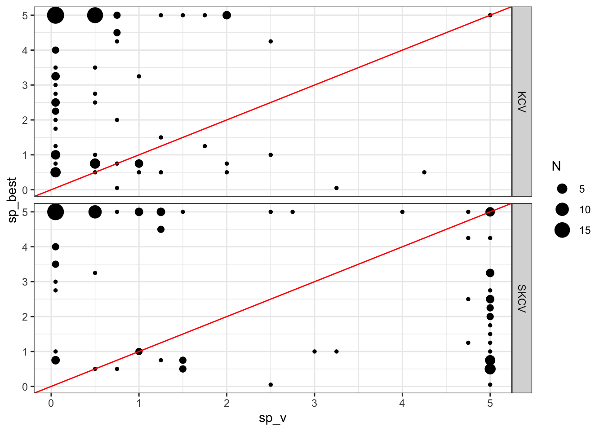

library(spatialsample)
library(tidyverse)
library(data.table)
library(sf)
library(patchwork)
library(mgcv)
library(parallel)
library(gstat)12 Spatial Cross-validation
K-fold and repeated K-fold cross-validation methods can under-estimate test MSE (that is how good the trained model is in predicting \(y\) in a new dataset) when the observations in the train data are not independent with each other. A typical example would be spatial correlation of the error term. In many applications including environmental and agricultural events, spatially correlated error is commonly observed. In order to combat the problem of test MSE underestimation by regular K-fold cross-validation (hereafter, simply KCV), you can use spatial K-fold cross-validation (SKCV) instead.
Packages to load for replication
Note
Goals of this section
- Examine the consequence of using KCV when the data are spatially correlated
- Understand how SKCV is conducted and how to implement it in R
- Examine the difference in the estimate of MSEs from KCV and spatial KCV
- Check if the optimal hyper-parameters suggested by KCV and SKCV are any different
For this section, we will consider the following data generating process.
\[ \begin{aligned} y = \alpha + \beta_1 x + \beta_2 x^2 + u \end{aligned} \]
where \(x\) and \(u\) are spatially correlated (which makes \(y\) spatially correlated).
Code to create the dataset
#=== create grids (on top of IL state border) ===#
# any spatial object will do. IL state border is picked
# just because it is easy to get without reading a shapefile
grids_il <-
tigris::counties(
state = "IL",
progress_bar = FALSE
) %>%
st_as_sf() %>%
st_make_grid(n = c(30, 30)) %>%
st_as_sf() %>%
mutate(id := 1:n()) %>%
rename(geometry = x)
#=== set up a model ===#
g_temp <-
gstat(
formula = z ~ 1,
locations = ~ X + Y,
beta = 0,
dummy = T,
model = vgm(
psill = 20,
range = 100,
nugget = 0,
model = "Sph"
),
nmax = 50
)
#=== get coordinates ===#
xy <-
st_coordinates(st_centroid(grids_il)) %>%
data.table()
gen_data <- function(seed) {
set.seed(seed)
#=== generate error ===#
error <-
predict(g_temp, newdata = xy, nsim = 1, debug.level = 0) %>%
data.table() %>%
#=== normalize ===#
.[, sim1 := (sim1 - mean(sim1))/sd(sim1)]
#=== generate x ===#
var <-
predict(g_temp, newdata = xy, nsim = 1, debug.level = 0) %>%
data.table() %>%
#=== normalize ===#
.[, sim1 := pnorm(sim1, mean = mean(sim1), sd = sd(sim1))]
#=== assign the generated values to the data ===#
data <-
grids_il %>%
mutate(
e = error[, sim1] * 30, # N(0, 400)
x = var[, sim1] * 10, # ranges from 0 to 10
y_det = 10 + 48 * x - 4 * x^2,
y = y_det + e
)
return(data)
}Here is the data we are going to work with (see the side note for the code to define gen_data, which takes a seed value and generate a spatial dataset):
(
train_data <- gen_data(seed = 47823)
)Simple feature collection with 900 features and 5 fields
Geometry type: POLYGON
Dimension: XY
Bounding box: xmin: -91.51308 ymin: 36.9703 xmax: -87.01993 ymax: 42.50848
Geodetic CRS: NAD83
First 10 features:
id geometry e x y_det y
1 1 POLYGON ((-91.51308 36.9703... 32.014355 2.153034 94.80342 126.8178
2 2 POLYGON ((-91.36331 36.9703... 24.194364 2.239651 97.43909 121.6335
3 3 POLYGON ((-91.21354 36.9703... 21.171324 3.116050 120.73134 141.9027
4 4 POLYGON ((-91.06376 36.9703... 36.490775 2.387959 101.81265 138.3034
5 5 POLYGON ((-90.91399 36.9703... 32.055021 4.147745 140.27661 172.3316
6 6 POLYGON ((-90.76422 36.9703... 22.757886 5.706360 153.65510 176.4130
7 7 POLYGON ((-90.61445 36.9703... 25.907393 6.887535 150.84913 176.7565
8 8 POLYGON ((-90.46468 36.9703... 9.734432 8.724672 124.30466 134.0391
9 9 POLYGON ((-90.31491 36.9703... 9.647037 9.242517 111.94433 121.5914
10 10 POLYGON ((-90.16514 36.9703... 7.096003 9.627942 101.35216 108.4482We have three main variables, y (dependent variable), x (explanatory variable), and e (error). Figure 12.1 shows how they are spatially distributed. It also shows that all of them are spatially positively correlated.
Code
g_error <-
ggplot(data = train_data) +
geom_sf(aes(fill = e), color = NA) +
scale_fill_viridis_c() +
theme_void()
g_x <-
ggplot(data = train_data) +
geom_sf(aes(fill = x), color = NA) +
scale_fill_viridis_c() +
theme_void()
g_y <-
ggplot(data = train_data) +
geom_sf(aes(fill = y), color = NA) +
scale_fill_viridis_c() +
theme_void()
g_y | g_x | g_error 
We are going to use gam() with k \(= 30\) and sp \(= 0\) as the model in conducting KCV and spatial KCV. Let’s first create folds for KCV and SKCV. First, here is KCV folds.
set.seed(93043)
(
kcv_folds <-
rsample::vfold_cv(train_data, v = 6) %>%
mutate(type := "KCV")
)# 6-fold cross-validation
# A tibble: 6 × 3
splits id type
<list> <chr> <chr>
1 <split [750/150]> Fold1 KCV
2 <split [750/150]> Fold2 KCV
3 <split [750/150]> Fold3 KCV
4 <split [750/150]> Fold4 KCV
5 <split [750/150]> Fold5 KCV
6 <split [750/150]> Fold6 KCV Figure 12.2 is the visualization of the spatial distribution of training and test datasets for each of the five folds for KCV.
Code
plot_kcv_data <-
kcv_folds %>%
rowwise() %>%
mutate(folds = list(
rbind(
analysis(splits) %>% mutate(type = "training"),
assessment(splits) %>% mutate(type = "test")
)
)) %>%
dplyr::select(id, folds) %>%
unnest() %>%
st_as_sf()
ggplot(plot_kcv_data) +
geom_sf(aes(fill = type), color = NA) +
facet_wrap(id ~ .) +
theme_void()Now, let’s create a five spatially clustered folds using the spatialsample package for SKCV.
set.seed(482943)
(
skcv_folds <-
spatial_clustering_cv(train_data, v = 6) %>%
mutate(type := "SKCV")
)# 6-fold spatial cross-validation
# A tibble: 6 × 3
splits id type
<list> <chr> <chr>
1 <split [737/163]> Fold1 SKCV
2 <split [742/158]> Fold2 SKCV
3 <split [766/134]> Fold3 SKCV
4 <split [770/130]> Fold4 SKCV
5 <split [745/155]> Fold5 SKCV
6 <split [740/160]> Fold6 SKCV Figure 12.3 presents the spatial distribution of training and test datasets for each of the five folds for SKCV.
Code
plot_kcv_data <-
skcv_folds %>%
rowwise() %>%
mutate(folds = list(
rbind(
analysis(splits) %>% mutate(type = "training"),
assessment(splits) %>% mutate(type = "test")
)
)) %>%
dplyr::select(id, folds) %>%
unnest() %>%
st_as_sf()
ggplot(plot_kcv_data) +
geom_sf(aes(fill = type), color = NA) +
facet_wrap(id ~ .) +
theme_void()
Let’s now implement KCV and SKCV. Since we observe the true generating process, we can calculate how good the fitted curve is compared to true \(E[y|X]\) in addition to observed \(y\) for the left-out samples in each fold.
#=== conduct CV ===#
cv_results <-
rbind(kcv_folds, skcv_folds) %>%
#=== make it possible to apply function row by row ===#
rowwise() %>%
mutate(
trainining_data = list(analysis(splits)),
test_data = list(assessment(splits))
) %>%
#=== train the model ===#
mutate(gam_fit = list(
gam(y ~ s(x, k = 6), data = trainining_data)
)) %>%
#=== get mse ===#
mutate(mse_data = list(
test_data %>%
data.table() %>%
.[, y_hat := predict(gam_fit, newdata = .)] %>%
.[, .(
mse_obs = mean((y - y_hat)^2), # MSE
mse_true = mean((y_det - y_hat)^2) # deviation from E[y|x]
)]
))
#=== MSE summary ===#
(
mse_summary <-
cv_results %>%
dplyr::select(id, type, mse_data) %>%
unnest() %>%
data.table()
) id type mse_obs mse_true
1: Fold1 KCV 771.6230 136.42226
2: Fold2 KCV 751.5325 84.27665
3: Fold3 KCV 700.9900 120.13372
4: Fold4 KCV 745.6244 117.35832
5: Fold5 KCV 902.1049 188.20804
6: Fold6 KCV 865.3081 116.87029
7: Fold1 SKCV 320.6830 73.67078
8: Fold2 SKCV 2118.1510 104.10051
9: Fold3 SKCV 652.5106 38.22498
10: Fold4 SKCV 466.7582 72.25585
11: Fold5 SKCV 2356.5147 216.22673
12: Fold6 SKCV 264.8194 450.30481You can see that MSE values (mse_obs) are mostly greater and also more variable for SKCV. By averaging MSE over folds by CV type,
mse_summary[, .(mse_obs = mean(mse_obs)), by = type] type mse_obs
1: KCV 789.5305
2: SKCV 1029.9062So, indeed KCV provides lower estimate of test MSE than SKCV. Now, it is important to recognize the fundamental difference in what is measured by KCV and SKCV. KCV measures the accuracy of the trained model applied to the new data points that are located inside the area where the train data covers geographically. SKCV, on the other hand, measures the accuracy of the trained model applied to the new data points that are outside the area where the train data covers geographically. In other words, it measures the modeling accuracy when the trained model is applied to a new region. So, KCV does overstate the accuracy of the model if your interest is applying the model to a new region.
Let’s look into the SKCV results a bit more. Looking at MSE values by fold for KCV and SKCV, you can notice that MSE is much more variable for SKCV. Figure 12.4 plots data points in the test data and the curve fitted on the training data by cross-validation type and fold (Note that Fold1 for KCV and SKCV have nothing to do with each other). Since KCV uses randomly split data, all the KCV test datasets are scattered all across the area and they look similar to each other. On the other hand, SKCV test datasets look quite different from each other as they are sampled in a spatially clustered manner. If the original data has no spatial correlation, then SKCV and KCV would have resulted in very simple test datasets. However, since the original data is spatially positively correlated, one packet of a field may look very different from another pocket of the field. By looking at Figure 12.4, you can easily see that FOLD2 and FOLD5 have very high MSE for SKCV. This observation is confirmed with the MSE value by fold presented above.
Code
pred_data <-
cv_results %>%
mutate(eval_data = list(
data.table(
x = seq(min(train_data$x), max(train_data$x), length = 100)
) %>%
.[, y_hat := predict(gam_fit, newdata = .)]
)) %>%
dplyr::select(id, type, eval_data) %>%
unnest()
raw_test_data <-
cv_results %>%
dplyr::select(id, type, test_data) %>%
unnest()
ggplot() +
geom_point(
data = raw_test_data,
aes(y = y, x = x),
color = "darkgrey",
size = 0.7
) +
geom_line(
data = pred_data, aes(y = y_hat, x = x),
color = "red"
) +
facet_grid(id ~ type) +
theme_bw()
This is primarily because of the data imbalance between the training and test datasets, in particular the error term in this case. Figure 12.5 compares the distribution of the error term for the training and test datasets by fold for SKCV. As you can see, their distributions are very different for FOLD2 and FOLD5. In FOLD2, the average of the error term for the training data is much higher than that for the test data. The opposite is true for FOLD5. These differences of course result in large differences in the average value of the dependent variable. This, then, further results in consistent under or over-estimation of the level of the dependent variable. Since squared error is defined as \([y_i -\hat{f}(x_i)]^2\), the consistent bias (you can consider this as bias in intercept in the linear-in-parameter modeling setting) will naturally lead to a higher MSE. That is exactly what is observed for FOLD2 and FOLD5.
Code
plot_data_split <-
cv_results %>%
filter(type == "SKCV") %>%
dplyr::select(id, trainining_data, test_data) %>%
data.table() %>%
melt(id.var = "id") %>%
unnest()
ggplot() +
geom_density(
data = plot_data_split,
aes(x = e, fill = variable),
alpha = 0.4
) +
facet_wrap(id ~ .) +
theme_bw()
While MSE values for FOLD2 and FOLD5 are high in SKCV, notice that their fitted curves are very much similar to the other folds and trace the true \(E[y|x]\) quite well. The culprit of their high MSEs is the consistent difference in the average value of \(y\) between the training and test datasets. This means that if your interest is in understanding the causal impact of \(x\) on \(y\), then the fitted curves for FOLD2 and FOLD5 are just as good as those for the other folds despite the fact that their MSE values are much higher than the rest. This illustrates well that MSE is not really a good criteria to rely on if you ultimate interest is in estimating the causal impact of a treatment even though it is a good measure if your ultimate interest in prediction (predicting the level of the dependent variable).
Finally, whether KCV is over-optimistic in estimating test MSE than SKCV or not is of little importance for those who are interested in causal inference because how well the trained model predicts the level of the dependent variable (which MSE measures) is irrelevant. Rather, more critical question is whether the use of KCV leads us to choose sub-optimal hyper parameter values compared to SKCV. This could have a real consequence when we select a model and its hyper-parameter values for the first-stage ML applications in Double Machine Learning methods.
12.1 Hyper-parameter tuning
Now, let’s see whether KCV and SKCV lead to different tuning results using gam(). Here, we fix k at \(50\) and vary sp to find the best sp value. The following function takes an sp value and return MSE values from both KCV and SKCV.
get_mse <- function(sp, kcv_folds, skcv_folds) {
cv_results <-
rbind(kcv_folds, skcv_folds) %>%
#=== make it possible to apply function row by row ===#
rowwise() %>%
#=== get mse ===#
mutate(mse_data = list(
assessment(splits) %>%
data.table() %>%
.[, y_hat := predict( # predict y based on the fitted model
#=== train the model ===#
gam(y ~ s(x, k = 50, sp = sp), data = analysis(splits)),
newdata = .)
] %>%
.[, .(
mse_obs = mean((y - y_hat)^2)
)]
)) %>%
dplyr::select(id, type, mse_data) %>%
unnest() %>%
data.table() %>%
.[, sp_v := sp] %>%
.[]
return(cv_results)
}Here is an example at sp \(= 0.5\).
get_mse(0.5, kcv_folds, skcv_folds) id type mse_obs sp_v
1: Fold1 KCV 771.1552 0.5
2: Fold2 KCV 757.1101 0.5
3: Fold3 KCV 699.6830 0.5
4: Fold4 KCV 749.1340 0.5
5: Fold5 KCV 904.7470 0.5
6: Fold6 KCV 865.9606 0.5
7: Fold1 SKCV 324.7865 0.5
8: Fold2 SKCV 2149.3093 0.5
9: Fold3 SKCV 646.5064 0.5
10: Fold4 SKCV 462.3724 0.5
11: Fold5 SKCV 2350.4966 0.5
12: Fold6 SKCV 257.4204 0.5Let’s try sp values ranging from 0 to 5.
sp_seq <- c(0.05, seq(0.5, 5, by = 0.25))
cv_results <-
mclapply(
sp_seq,
function(x) get_mse(x, kcv_folds, skcv_folds),
mc.cores = detectCores() / 4 * 3
) %>%
rbindlist() %>%
.[, .(mse = mean(mse_obs)), by = .(type, sp_v)]Now, let’s see what value of sp would have been the best to estimate \(E[y|x]\) (this is what we really want to know, but can’t in practice because you do not observe the true data generating process unlike the simulation we are running here).
We will fit gam() at the same sequence of sp values used just above using the entire training dataset and check what sp value minimizes the prediction error from true \(E[y|x]\).
Note that since we are testing against the true \(E[y|x]\), we can simply use the training dataset instead of using independent test datasets. Of course, you cannot do this in practice.
(
mse_e <-
data.table(
sp_v = sp_seq
) %>%
rowwise() %>%
mutate(fitted_values = list(
gam(y ~ s(x, k = 50), sp = sp_v, data = train_data)$fitted.value
)) %>%
mutate(mse = mean((train_data$y_det - fitted_values)^2)) %>%
data.table() %>%
.[, .(sp_v, mse)] %>%
.[, type := "Test"]
)Let’s combine all the results and see how they are different.
Code
all_mse <- rbind(mse_e, cv_results)
ggplot() +
geom_line(data = all_mse, aes(y = mse, x = sp_v)) +
geom_point(data = all_mse, aes(y = mse, x = sp_v)) +
geom_point(
data = all_mse[, .SD[which.min(mse), ], by = type],
aes(y = mse, x = sp_v),
color = "red",
size = 2
) +
facet_grid(type ~ ., scale = "free_y") +
theme_bw()
So, the sp value that would produce the fitted curve that is closest to the true \(E[y|x]\) is 0.5. SKCV suggests that sp value of 2 is optimal. Finally, KCV suggests that sp value of 2.5 is optimal. But, of course this is just a single instance. Let’s run more of the same simulations to see if our guess is correct or not. Figure 12.7 presents the optimal sp values estimated by KCV and SKCV plotted against the actual optimal sp value from 100 simulations. Points around the red one-to-one line indicate good predictions by KCV and SKCV.
Code
run_cv_sim <- function(i)
{
print(i)
#=== create the training data ===#
training_data <- gen_data(seed = runif(1) * 1000)
#--------------------------
# prepare data for CV
#--------------------------
kcv_folds <-
rsample::vfold_cv(training_data, v = 6) %>%
mutate(type := "KCV")
skcv_folds <-
spatial_clustering_cv(training_data, v = 6) %>%
mutate(type := "SKCV")
#--------------------------
# run KCV and SKCV
#--------------------------
cv_results <-
lapply(
sp_seq,
function(x) get_mse(x, kcv_folds, skcv_folds)
) %>%
rbindlist() %>%
.[, .(mse = mean(mse_obs)), by = .(type, sp_v)] %>%
.[, .SD[which.min(mse)], by = .(type)]
#--------------------------
# gam fits on the entire train dataset
#--------------------------
gam_fits <-
data.table(
sp_v = sp_seq
) %>%
rowwise() %>%
mutate(gam_fit = list(
gam(y ~ s(x, k = 50), sp = sp_v, data = training_data)
)) %>%
mutate(mse = mean((training_data$y_det - gam_fit$fitted.value)^2))
#--------------------------
# Level 2 comment out
#--------------------------
opt_x_data <-
left_join(cv_results, gam_fits, by = "sp_v") %>%
rowwise() %>%
mutate(opt_x =
data.table(
x = seq(min(training_data$x), max(training_data$x), length = 100)
) %>%
.[, y_hat := predict(gam_fit, newdata = .)] %>%
.[, pi_hat := y_hat - 8 * x] %>%
.[which.max(pi_hat), x]
) %>%
data.table() %>%
.[, .(type, opt_x)]
#--------------------------
# best sp
#--------------------------
best_sp <-
gam_fits %>%
data.table() %>%
.[which.min(mse), sp_v]
return_results <-
cv_results %>%
.[, sp_best := best_sp] %>%
opt_x_data[., on = "type"]
return(return_results)
}
sim_results <-
mclapply(
1:100,
function(x) run_cv_sim(x),
mc.cores = detectCores() * 3 / 4
) %>%
rbindlist(idcol = "sim")
ggplot(data = sim_results[, .N, by = .(sp_v, type, sp_best)]) +
geom_point(aes(x = sp_v, y = sp_best, size = N)) +
geom_abline(slope = 1, color = "red") +
facet_grid(type ~ .) +
theme_bw()
KCV seems to underestimate the optimal value of sp. While SKCV seems to be less biased, it is not doing a great job just like KCV.
This was an interesting experiment. However, how consequential is it in terms of treatment effect estimation? When the actual optimal sp value is 5 and KCV is suggesting sp value of 0.05 (in many cases), using sp = 0 as the final model leads to a model that is terrible at treatment effect estimation? To see this, let’s consider a simple economic problem. Suppose \(y\) and \(x\) are an output and input, respectively. Further suppose that the price of \(y\) is 1 and the cost of \(x\) is 8. We would like to solve the following profit maximization problem:
\[ \begin{aligned} & Max_{x} 4 \times y - 2 \times x \\ \Rightarrow & Max_{x} 1 \times (10 + 48 \times x - 4 \times x^2) - 8 \times x \end{aligned} \]
Here, \(1 \times (10 + 48 \times x - 4 \times x^2)\) is the revenue and \(8 \times x\) is the cost (the difference is the profit).
Taking the derivative of the objective function with respect \(x\),
\[ 1 \times 48 - 1 \times 4 \times 2 \times x - 8 = 0 \tag{12.1}\]
Here, \(1 \times 48 - 1 \times 4 \times 2 \times x\) represents the marginal treatment effect of \(x\). Now, note that the intercept (\(10\)) goes away and it plays no role in determining the optimal value of the input (\(x\)). That is, it is perfectly fine to get the intercept wrong as long as we are estimating the marginal treatment effect of \(x\) accurately (as we discussed earlier, MSE is not a good measure for this as it punishes a bias in intercept).
According to Equation 12.1, optimal \(x\) is \(5\). Figure 12.8 shows the density plot of estimated optimal \(x\) by KCV and SKCV. It seems like KCV and SKCV provide similar results and it does not really matter which one to use for sp parameter tuning at least in this particular instance. It is important to note that this result clearly does not generalize. We looked at a very simply toy example. This section was not intended to give you a general advise on which KCV or SKCV you should use. It would be interesting to examine the difference between KCV and SKCV under more complex data generating process using other ML methods.
Code
ggplot(sim_results) +
geom_density(aes(x = opt_x, fill = type), alpha = 0.4) +
scale_fill_discrete(name = "") +
theme_bw()